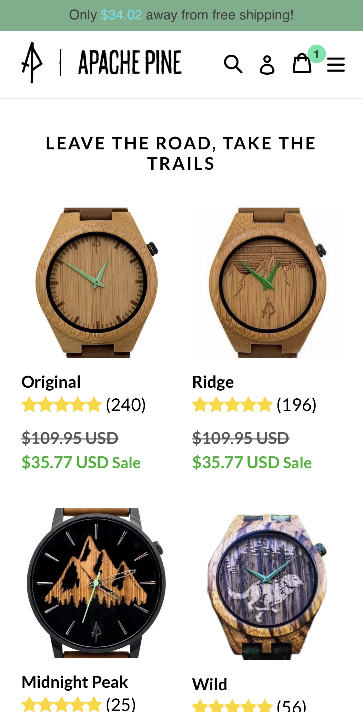

Design Principles Document
Brennan Tanner
Rule of Thirds
Incline Marketing
inclinemarketing.orgThe Rule of Thirds teaches that designs will be more visually pleasing if the designer places their objects of focus in one third of the field of view. The front page of incline marketing website is an excellent example of the "rule of thirds" principle in use.
You can see in my example here that the basic elements are easily cut into thirds on the screen. The 2 logos above and the text on bottom are centered in the middle column. Meanwhile, the "your" carousel and the 2 buttons are centered in the middle row.
Visual Hierarchy
Apache Pine
apachepine.com 
The Apache Pine website is not a website I would recommend visiting, It is not a pleasant shopping experience. Visual Hierarchy is a design principle uses in every art medium. It is the practice of making the most important pieces of the project stick out from the others. If implemented well a designer can essentially lead the viewer along a specific path along the page.
In this example, the very first thing that draws the eyes is the "for sale" products at the very top, then to the next largest object, the tagline. After this your eyes will wander around the page for a moment soaking up the logo and other deals the website with throw at you. It is a clever tactic and a well implemented one at that.
Hick's Law
Great Scotts
www.greatscottsstores.com
I find it ironic that the perfects example of Hick's Law is none other than the web page for Great Scotts. Hick's Law suggests that the fewer options presented to an agent, the fewer decisions are needed to be made, and thus the agent will decide faster. In web design, this is very important for tailoring user experiences. If a website is nothing but dropdown menus and decision trees, they will grow bored of the experience and leave, or even angry if they need to stay longer than needed.
The web site for Great Scotts gives you only a few decisions right off the bat. First is find a location near you, this makes sense since all business is done in their physical locations. Second you have social media links and more information further down the page. All around great example.